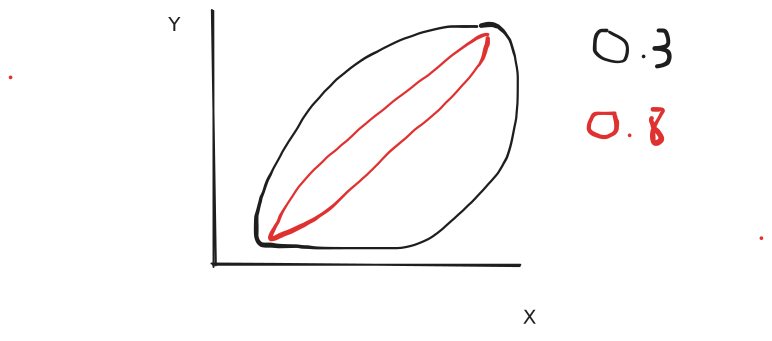

hist(smp$duree.peine, xlab="Durée de peine", ylab="Fréquence", col="white", cex.axis=1.2, cex.lab=1.2, main="Histogramme de la variable 'Durée de peine'")
box()
qqnorm(smp$duree.peine)
qqline(smp$duree.peine)
Plusieurs fonctions disponibles sur R :
str() : structure d’un objet R
describe() du package Hmisc : description sommaire d’un jeu de données
summary() : résumé statistique d’un jeu de données
Exprimer un jeu de données :
Moyenne : mieux que médiane pour Bruno Falissard
Écart-type : contient les 2/3 des données
C’est la révolution des graphiques avec les téléphones, les selfies, Instagram !!!
Langage à part entière dans R pour faire des graphiques
Références :
Collection de packages R pour la science des données
Contient :
ggplot2 : graphiques
dplyr : manipulation de données
tidyr : nettoyage de données
readr : lecture de données
purrr : programmation fonctionnelle
tibble : tableaux de données
Références :
OR : Odds Ratio
RR : Risque Relatif
\[OR = \frac{a/b}{c/d} = \frac{a \times d}{b \times c}\]
\[RR = \frac{a/(a+b)}{c/(c+d)}\]
OR : bon estimateur du RR lorsque l’événement est rare (< 10 %)
= sert à quantifier l’association entre deux variables quantitatives
Coefficient de corrélation de Pearson : mesure l’association linéaire entre deux variables quantitatives
Coefficient de corrélation de Spearman : mesure l’association non linéaire entre deux variables quantitatives
NB : association non linéaire : c’est à dire que la distribution des variables n’est pas normale
2 variables :
smp$duree.peine : variable quantitative de distribution non normale (très asymétrique)hist(smp$duree.peine, xlab="Durée de peine", ylab="Fréquence", col="white", cex.axis=1.2, cex.lab=1.2, main="Histogramme de la variable 'Durée de peine'")
box()
qqnorm(smp$duree.peine)
qqline(smp$duree.peine)
smp$age : variable quantitative de distribution normalehist(smp$age, xlab="Âge", ylab="Fréquence", col="white", cex.axis=1.2, cex.lab=1.2, main="Histogramme de la variable 'Âge'")
box()
qqnorm(smp$age)
qqline(smp$age)
Calcul de la corrélation entre Âge et Durée de peine
Quel coefficient utiliser ?
Pearson : calcule la corrélation linéaire entre deux variables quantitatives
Spearman : calcule la corrélation entre LES RANGS de deux variables quantitatives
Ici : on fait ce qu’on veut selon Bruno Falissard, MÊME SI AUCUNE DES DEUX VARIABLES NE SUIT UNE LOI NORMALE.
Normalité : nécessaire si on veut TESTER la nullité de corrélation.
Dans l’exemple de Bruno Falissard, malgré qu’aucune des deux variables ne suive une loi normale, il utilise le coefficient de corrélation de Pearson.
Représentation graphique de la corrélation et de la relation linéaire entre les deux variables :

Petite complexité : quel test utiliser selon le type de variables que l’on veut comparer ?
Grosse complexité : interprétation !
Comparaison de pourcentage (comparaison de deux variables qualitatives)
Conditions d’application : Effectifs théoriques >= 5 dans chaque case du tableau de contingenceDans une variable binaire (probabilité théorique p) :
np ≥ 5
n(1 - p) ≥ 5
Cela signifie que chaque catégorie doit avoir au moins 5 observations attendues.
De façon générale (tableaux > 2×2) : toutes les cases doivent avoir un effectif attendu ≥ 5
Comparaison de moyennes (comparaison de deux variables quantitatives)
Conditions d’application :
Variances égales entre les deux groupes
ET
N > 30 dans chaque groupe et variances égales
OU les deux distributions sont normales
En fait : + les distributions s’éloignent de la normalité, + il faut un grand échantillon pour appliquer le test T de Student.
“On ne peut pas être rigoureux avec les conditions de validité du test T”
NB : PAS de test de normalité !!
En épistémologie : pour Neyman et Pearson :
Hypothèse nulle : distrubutions normales
Hypothèse alternative : distributions non normales
Il faudrait calculer la puissance du test pour vérifier si on peut rejeter l’hypothèse nulle !!
Et c’est impossible de calculer la puissance du test de normalité de Shapiro-Wilk
H0 : \(\mathcal{L}(x, \theta_0)\) : vraisemblance des données \(x\) sous H0
H1 : \(\mathcal{L}(x, \theta_1)\) : vraisemblance des données \(x\) sous H1
\(k_\alpha\) : valeur seuil dépendant de alpha
Et le calcul de puissance (\(\theta_1\)) ou \(1 - \beta\) est IMPOSSIBLE !!
Donc les tests de normalité soulèvent des problèmes de puissance.
En pratique pour visualiser la normalité : histogramme et Q-Q plot.
Pour Falissard : la VRAIE RIGUEUR, c’est de vérifier la normalité GRAPHIQUEMENT.
Dans R : fonction by() pour calculer les variances par groupe
by(smp$schizophrenie, smp$tbl.bipol, var)smp$tbl.bipol: 0
[1] 0.07768546
------------------------------------------------------------
smp$tbl.bipol: 1
[1] 0Très robuste !
Boostrap : si N > 20 dans chaque groupe
Distributions très irrégulières : soit transformer les données, soit tests non paramétriques type bootstrap.
Tests non paramétriques :
Test de Mann-Whitney : comparaison de deux groupes (quantitative)
Test de Kruskal-Wallis : comparaison de plusieurs groupes (quantitative)
Test de Wilcoxon : comparaison de deux mesures appariées (quantitative)
Test de Friedman : comparaison de plusieurs mesures appariées (quantitative)
Test exact de Fisher : comparaison de pourcentages (qualitative)
échantillon : tiré au sort depuis une population infinie hypothétique
petit p : probabilité que le résultat observé soit applicable à la population infinie hypothétique !
Exemple :
On tire 30 personnes parmi celles qui passent devant Bicêtre
On mesure leur taille
On calcule la moyenne + intervalle de confiance de la taille dans notre échantillon
On obtient une moyenne + une intervalle qui permet d’estimer la moyenne de la taille dans une population de CLONES STRICTEMENT IDENTIQUE de la population de l’échantillon !
\(\longrightarrow\) La VRAIE population est une population FANTASMÉE !
La population infinie hypothétique n’a pas de raison de ressembler à la population réelle !!
Intervalle de confiance: estimateur de la variabilité d’un paramètre dans une population multipliée de notre échantillon !
Surtout pour essais cliniques !
H0 : hypothèse nulle : P(A) = P(B)
H1 : hypothèse alternative : P(A) - P(B) > \(\Delta\)
p < α : rejet de H0
3 risques estimés a priori :
α : risque de première espèce (erreur de type I)
β : risque de deuxième espèce (erreur de type II)
\(\Delta\) : différence minimale cliniquement importante